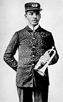

 Афро-американец из относительно благополучной семьи. Его дед и отец были проповедниками во Флоренции, штат Алабама. Получил хорошее общее и музыкальное образование. Игре на корнете учился у парикмахера из парикмахерской по соседству. По окончанию школы работал учителем, но не удовлетворившись низкой зарплатой, перепробовал еще несколько профессий, успел поработать на фабрике, прежде чем начал музыкальную карьеру. С 22 лет руководил танцевальным оркестром, много гастролировал по США и на Кубе. Организованный им скрипичный ансамбль "The Lauzetta Quartet" выступал на Всемирной ярмарке в Чикаго 1893 года. На рубеже веков играл и был музыкальным руководителем в ансамблях "Mahara's Minstrels", "The Colored Knights of Pythias".В автобиографии описал, как в 1903 году, когда жил в Кларксдейле, в ожидании поезда на маленькой железнодорожной станции услышал человека, который пел "очень странную" песню, аккомпанируя себе на гитаре, проводя ножом по струнам. Так Дабл-Ю Си Хэнди впервые услышал блюз (мелодию которого использовал в своей песне "Yellow Dog Blues"). И, хотя есть и более ранние свидетельства, этот случай и считается "открытием" блюза, что для Конгресса США стало поводом объявить 2003 год - Годом блюза. Первым из профессиональных музыкантов "признал" и начал использовать "блюзовые ноты". В 1912 году издал ноты "Memphis Blues" что дает ему основание претендовать на звание первого в истории блюзового композитора. Считается, что это первая опубликованная песня, чье название включает в себя слово "блюз". Именно в его произведениях впервые в печатном виде зафиксированы пониженные третья и седьмая ступень, считающиеся характернейшим признаком блюзового звукоряда. Однако на тот момент историческую ценность песни не почувствовал даже автор - за 100$ он продал авторские права на "Memphis Blues". В последующие годы опубликовал еще несколько мелодий, без которых ныне невозможно представить себе историю джаза и блюза: "St.Louis Blues"(1914),"Yellow Dog Blues"(1914), "Beale Street Blues"(1916), "Careless Love" и др. Всего опубликовал около 150 песен. В 1917г. руководимый им "Handy's Orchestra of Memphis" записал несколько пластинок в Нью-Йорке. Среди них не было блюзов. И блюзовый бум начался три года спустя, когда Мэммие Смит (Mamie Smith) записала "Безумный блюз" сочинения Перри Брэдфорда (Perry Bradford), который не скрывал, что блюзы изучал по нотам Дабл-Ю Си Хэнди. В 1926г. Дабл-Ю Си Хэнди опубликовал книгу "Blues: An Anthology", в которой представил нотации известных блюзов и свои соображения об истоках этой музыки. В 20-х и 30-х годах продолжал работать с оркестрами, но из-за постепенно надвигавшейся слепоты все меньше концертировал и записывался. Написал ряд книг, в том числе и первые антологии афро-американских спиричуэлсов и блюзов. В 1938 году его достижения чествовались именным концертом в престижном нью-йоркском зале "Карнеги-Холл". В 1943г. полностью потерял зрение. В 1958г., после его смерти, вышел фильм "St. Louis Blues", где его экранный образ воплотил великолепный Нэт Кинг Коул (Nat King Cole). В Мемфисе, в парке его имени, установлен его монумент. Его имя носит главная ежегодная награда блюзового цеха, вручаемая The Blues Foundation с 1980 года: W.C.Handy Awards. В своих музыкальных произведениях Дабл-Ю Си Хэнди обычно трактовал блюз как экзотический элемент для придания своеобразной оригинальности эстрадным мелодиям и редко следовал точно канонам блюзовой формы. Его архиклассический St.Louis Blues включает в себя фрагмент танго, очень модного тогда, но совершенно чуждого природе блюза. (Замечательно, что эта эклектика сегодня не режет ухо - настолько эта песня стала "классикой жанра"). Еще меньше его можно назвать типичным блюзмэном по образу жизни. К его титулу "Отец блюза" следует относиться уважительно, но не стоит воспринимать его буквально. Кроме того, что он подарил блюзу несколько гениальных мелодий, он был и первым пропагандистом и историографом блюза. Его автобиография "Father Of The Blues" ("Отец Блюза"), изданная в 1938г., занимает особое место в блюзовой библиографии, являясь одним из наиболее ранних свидетельств об истории жанра. Если даже не он был самым-самым первым, кто опубликовал ноты блюза, то несомненно именно произведения Дабл-Ю Си Хэнди заложили основу сокровищницы блюзовых стандартов. ©ВЭБ2003
Дискография |